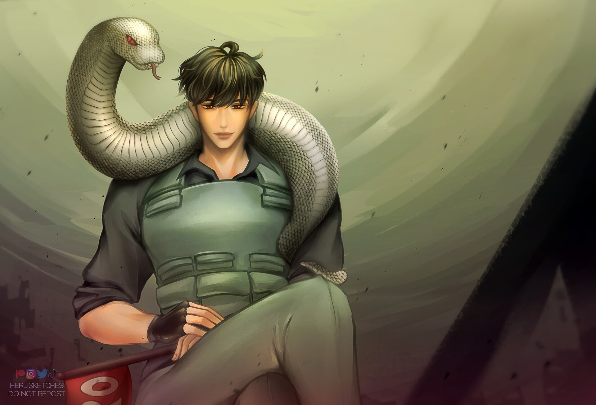

Appearance
Kim Dokja has fair complexion and a slender face. His eyelashes are long, and his hair is as smooth and silky as ebony. He has a distinctive smile and a demeanor that is tranquil and vibrant. He is fairly expressive, has a slender physique, and has unique mannerisms. He may not be aware of it, but when he worries about the kids, he tilts his head slightly. His eyes close and his eyelids flutter when he thinks of his mother. When he's teasing, he smiles mischievously and raises his eyebrows. When he recalls his favorite stories, a gleam forms in his eyes. Overall, Kim Dokja is an ethereal man with a selfless heart.

History
Kim Dokja was a withdrawn and nervous child due to his history of abuse and bullying from family and classmates.He avoided social interaction by spending the most of his time alone and reading books and webnovels. However, he still struggled with immense depression, which eventually drove him to attempt suicide. Shortly after he woke up, he discovered the novel Ways of Survival and became engrossed in it, he strives to live long enough to read the next chapter.
Personality
At his core, Kim Dokja is a devoted and loving person. Due of his love to those he cares about and his willingness to offer his life in their defense, he is selective about who he confides his deepest faith.. He frequently strives to protect his loved ones from harm by taking on their challenges, and when he is unable to fight through those struggles alone, he frequently exhibits extreme self-deprecation. This pattern of behavior of self-deprecation is recurrent. Despite the fact that he loves people, he is quite harsh on himself since he is insecure and lacks confidence in himself. Overall, he is incredibly committed to his objectives but perhaps a little self-conscious about how others perceive him.